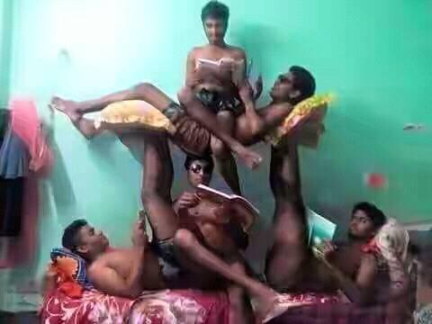

My name is Rashed. I am a small freelancer. But I want to more lean in this sector. I want to learn web development. I want to be a web developer.
Web development is a good demand in the world. Because it use as a website. Web development is the building and maintenance of websites. It is the work that happens behind the scenes to make a website look great, work fast and perform well with a seamless user experience. Web developers, or devas do this by using a variety of coding languages. The languages they use depends on the types of tasks they are preforming and the platforms on which they are working.
What do you want to tell me?Bangladesh Election Commission has its own secretariat as per Election Commission Secretariat Ain 2009, which is headed by a Secretary. The Secretariat is located in Dhaka and has a Electoral Training Institute, field offices at the Regional, District and Upazilla/Thana level.
Bangladeshi most popular food list item. Example:
T20 World Cup 2021 Bangladesh squad order list:
Unorder list item
Bangladesh is a small country
Entertaiment is very important in life. Funny Video is very entertainment.